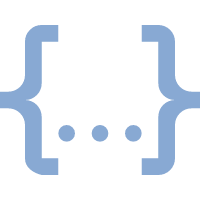

安装
<script>
直接下载 vue 文件后引入。
<script src="vue.js"></script>
CLI
使用官方提供的命令行工具（此处使用 npm 来安装 CLI）
# 全局安装 vue-cli
$ npm install --global vue-cli
# 创建一个基于 webpack 模板的新项目
$ vue init webpack 项目名
# 进入项目
$ cd 项目名
# 安装依赖模块
$ npm install
# 运行
$ npm run dev
 build：项目构建目录config：配置目录
build：项目构建目录config：配置目录
dev.en.js：开发环境配置
prod.env.js：生产环境配置
test.env.js：测试环境配置
index.js：项目配置
prod.env.js：生产环境配置
test.env.js：测试环境配置
index.js：项目配置
node_modules：npm 模块srcassets：图片目录components：公共组件目录router：路由目录App.vue：页面入口文件
main.js：程序入口文件
static：静态资源test：测试目录index.html：程序入口文件
package.json：项目配置文件
 README.md：说明文档
README.md：说明文档
"scripts": {
"dev": "webpack-dev-server --inline --progress --config build/webpack.dev.conf.js"
}
dev: {
// Paths
assetsSubDirectory: 'static',
assetsPublicPath: '/',
proxyTable: {},
// Various Dev Server settings
host: 'localhost', // can be overwritten by process.env.HOST
port: 8080, // can be overwritten by process.env.PORT, if port is in use, a free one will be determined
autoOpenBrowser: false,
errorOverlay: true,
notifyOnErrors: true,
poll: false, // https://webpack.js.org/configuration/dev-server/#devserver-watchoptions-
}
<!DOCTYPE html>
<html>
<head>
<meta charset="utf-8">
<meta name="viewport" content="width=device-width,initial-scale=1.0">
<title>vue-demo</title>
</head>
<body>
<div id="app"></div>
<!-- built files will be auto injected -->
</body>
</html>
import Vue from 'vue'
import App from './App'
import router from './router'
Vue.config.productionTip = false
/* eslint-disable no-new */
new Vue({
el: '#app',
router,
render: h => h(App)
})
<template>
<div class="hello">
<h1>{{ msg }}</h1>
<h2>Essential Links</h2>
<ul>
<li>
<a
href="https://vuejs.org"
target="_blank"
>
Core Docs
</a>
</li>
<li>
<a
href="https://forum.vuejs.org"
target="_blank"
>
Forum
</a>
</li>
<li>
<a
href="https://chat.vuejs.org"
target="_blank"
>
Community Chat
</a>
</li>
<li>
<a
href="https://twitter.com/vuejs"
target="_blank"
>
Twitter
</a>
</li>
<br>
<li>
<a
href="http://vuejs-templates.github.io/webpack/"
target="_blank"
>
Docs for This Template
</a>
</li>
</ul>
<h2>Ecosystem</h2>
<ul>
<li>
<a
href="http://router.vuejs.org/"
target="_blank"
>
vue-router
</a>
</li>
<li>
<a
href="http://vuex.vuejs.org/"
target="_blank"
>
vuex
</a>
</li>
<li>
<a
href="http://vue-loader.vuejs.org/"
target="_blank"
>
vue-loader
</a>
</li>
<li>
<a
href="https://github.com/vuejs/awesome-vue"
target="_blank"
>
awesome-vue
</a>
</li>
</ul>
</div>
</template>
<script>
export default {
name: 'HelloWorld',
data () {
return {
msg: 'Welcome to Your Vue.js App'
}
}
}
</script>
<!-- Add "scoped" attribute to limit CSS to this component only -->
<style scoped>
h1, h2 {
font-weight: normal;
}
ul {
list-style-type: none;
padding: 0;
}
li {
display: inline-block;
margin: 0 10px;
}
a {
color: #42b983;
}
</style>
后略 ↓
不同版本比较
使用 npm i vue --save 下载获得的 vue 项目的 dist/ 目录下有多个版本：
import Vue from 'vue';
runtime & compiler
- compiler：可以将 Vue 选项的 template 属性编译为 render 函数
- runtime：除去 compiler 的 vue 代码
new Vue({
el: '#app',
template: '<h1>Hello world<h1>'
});
resolve: {
alias: {
'vue$': 'vue/dist/vue.esm.js'
}
},
$ npm run dev
参考文献
[1] Vue.js https://cn.vuejs.org/v2/guide/
[2] DiscipleD Vue 2.0 升（cai）级（keng）之旅https://segmentfault.com/a/1190000006435886